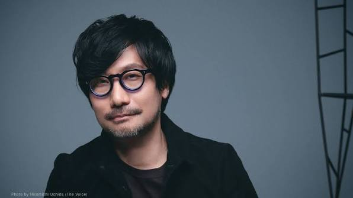

News
Hideo Kojima Separate from Sony
Hideo Kojima is continuing to build his studio outside Sony following the end of their publishing partnership. Kojima Productions is now focusing on its own projects, giving the studio more freedom over how its games are developed and released especially the new Physint project.